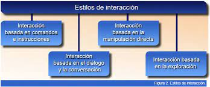
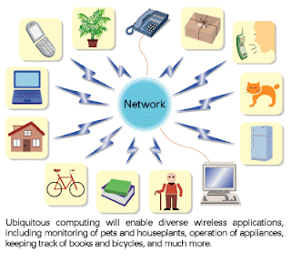

Tema 2: Interacción Humano-Ordenador
¿Qué es la interacción Humano-Ordenador?
La interacción Humano-Ordenador (HCI Por su sigla en inglés: Human-Computer Interaction) es una
disciplina que se encarga de estudiar el diseño, implementación y evaluación de sistemas
interactivos en el contexto de las actividades a desarrollar teniendo en cuenta las formas de hacer
naturales de los seres humanos.
Avances en el desarrollo de software y hardware han transformado nuestra cultura en la manera que
trabajamos, estudiamos y jugamos. Por esta razón la HCI se ha convertido en una de las áreas más
importantes de estudio en las ciencias de la información y administración de la tecnología.
(Herrera, C. 2017).

La interacción Humano-Computador estudia las formas de conectar al usuario a los sistemas
informáticos.
Historia
A lo largo de los años hasta la actualidad, la HCI ha presentado grandes sucesos desde su creación:
En la década de los 90 nace la HCI como una disciplina de estudio. Se definen las etapas de
evolución propuestas por Jonathan Grudin.
Desarrollo de interfaz de hardware solo para ingenieros especializados.
Desarrollo de lenguajes de programación que eliminen la necesidad de conocer detalles del hardware.
Utilización del teclado y monitor eliminando cantidades enormes de comandos que tenían que ser
memorizados.
Diálogos interactivos con el sistema a través de interfaces gráficas de usuario (GUI).
Computador con impacto fundamentalmente en lo grupal. Desarrollo de la computadora personal para
ámbitos distintos de la investigación y lo militar.
La creación de la WWW (World Wide Web) influye en la creación de sistemas que permitan la
interacción con contenidos en la red y no solo locales en cada computadora.
Objetivos de la HCI
Para la creación de sistemas interactivos, es necesario:
- Comprender factores psicológicos, ergonómicos, organizativos y sociales que determinan como el
usuario trabaja y hace uso de las computadoras.
- Desarrollar herramientas y técnicas que permitan a los diseñadores conseguir que los sistemas
sean los más idóneos para las actividades a las que se van a aplicar.
- Conseguir que la interacción sea eficiente, efectiva y segura, tanto a nivel individual como a
nivel de grupo.
¿Qué estudia la interacción humano ordenador?
Se busca que la Interacción por la línea de comandos contenga elementos amigables al usuario.
La investigación en HCI buscar desarrollar dispositivos y estilos de interacción entre la
computadora y las personas.
Dentro de los principales aspectos, la HCI estudia:
- Como se afecta la interacción con el hardware y software.
- Los modelos mentales del usuario frente al modelo de la maquina.
- Las tareas que desempeña el sistema y su adaptación a las necesidades del usuario.
- El diseño, que se busca que sea dirigido al usuario y no a la maquina.
- El impacto organizacional, buscando siempre ser positivo.

Figura: relacion de la HCI con otras disciplinas
Interfaz
Uno de los conceptos claves en la HCI es la interfaz. La interfaz se define como
una superficie de contacto entre dos entidades, en este caso, es un elemento que permite la
interacción entre las personas y las computadoras, un entorno en donde el usuario da instrucciones y
ordenes a la computadora para que esta las ejecute.
Por lo tanto, una interfaz refleja las cualidades físicas de las dos partes de la interacción
(humano y máquina).
1) visibilidad: para poder realizar una acción sobre un objeto, este tiene que ser visible.
2) comprensión intuitiva, o propiedad de ser evidente la parte del objeto sobre la que hemos de
realizar la acción y cómo hacerlo.
La interfaz de usuario de un sistema consiste en aquellos aspectos de este con los que el usuario
entra en contacto, ya sea física, perceptiva o conceptualmente. Los aspectos del sistema que están
escondidos para el usuario se denominan implementación.
El desarrollo de una interfaz adecuada para el usuario es muy importante, ya que los problemas que
puede presentar una interfaz de usuario pobre incluyen la reducción de la productividad, tiempos de
aprendizaje y niveles de errores inaceptables que pueden producir frustración al usuario y
finalmente, el descarte del sistema.
Aspectos que estudia la HCI
Factores Humanos
La Ergonomía o factores humanos es la disciplina científica relacionada con la comprensión de las
interacciones entre los seres humanos y los elementos de un sistema, y la profesión que aplica
teoría, principios, datos y métodos de diseño para optimizar el bienestar humano y todo el desempeño
del sistema. (Herrera, C. 2017).
Existen diversos factores que hay que considerar en la HCI y que además están interrelacionados
entre sí:
- Factores Físicos
- Factores psicológicos de los usuarios
- Factores del diseño o del sistema
- Factores Organizativos
Ejemplos:
Organización de los controles y pantallas: Aspectos físicos de organización, acciones rápidas al
usuario, acceso fácil y visibilidad de información amplia.
La información más importante para destacar debe estar situada a la altura de los ojos del usuario,
teniendo un cuidado de iluminación y del espacio en los controles.
Aspectos de salud: Posición física, temperatura, luz, ruido, tiempo de permanencia delante del
ordenador.
Uso de los colores en pantalla: manejo de contrastes y colores adecuados.
Psicología cognitiva
La psicología es una ciencia que estudia el comportamiento y los estados de la conciencia de la
persona humana, considerada individualmente y como miembro de un grupo social. La psicología
cognitiva trata de comprender el comportamiento humano y sus procesos mentales. La psicología
Social, por otra parte, trata de estudiar el origen y las causas del comportamiento humano en un
contexto social. (Herrera, C. 2017).
La psicología cognitiva estudia cómo los seres humanos adquirimos, mantenemos y usamos el
conocimiento dentro de nuestra vida. Analizar la psicología cognitiva detrás de un sistema
informático ayuda a verificar que las interfaces diseñadas son efectivas.
Paradigmas de interacción
La interacción se define como la acción, relación o influencia recíproca entre dos o más elementos.
Para la HCI, todos los intercambios que suceden entre la persona y el computador.
Los dispositivos con los que se interactúa son los canales de comunicación y corresponden a los
canales de comunicación humana (es decir, los sentidos). Cada canal de puede considerar una
modalidad diferente de interacción. Una interacción es multimodal cuando usa múltiples canales de
comunicación simultáneamente.
Un estilo de interacción es el término genérico para agrupar las diferentes maneras en que los
usuarios se comunican o interaccionan con el ordenador.
Los estilos de interacción predominantes son:

- Interfaz de línea de comandos:Fue el primer estilo de interacción de uso generalizado y
aún es muy usado en la actualidad. Es una manera de dar instrucciones directas al ordenador por
medio de palabras ingresadas en el teclado. Suele ser complejo de utilizar para el usuario
promedio.
- Menús y navegación: Un menú es un conjunto de opciones visualizadas en la pantalla, que
se pueden seleccionar y la selección de una de ellas o más supone la ejecución de una orden y
normalmente un cambio en la interfaz. Es más fácil realizar una acción del menú que recordar una
gran lista de comandos, por esto, esta interfaz es más amigable con el usuario promedio.
- Manipulación directa: Son sistemas que permiten una representación continua de los
objetos y de las acciones de interés (generalmente por medio de íconos), cambian una sintaxis de
comandos por la manipulación de objetos y acciones. tiene acciones rápidas, incrementales y
reversibles que provocan un efecto visible inmediatamente en el objeto seleccionado.
- Interacción Asistida: Utiliza un agente inteligente que colabora con el usuario en el
mismo ambiente de trabajo, de manera cooperativa; de esta forma. el usuario y los agentes se
comunican, controlan eventos, realizan tareas, etc. Un agente es un programa que sirve de
asistente al usuario, no es solo una herramienta y presenta algunas características asociadas
con la inteligencia humana, tales como aprendizaje, inferencia, adaptabilidad, creatividad.
Ejemplos de interacción asistida los podemos encontrar con los asistentes de voz tales como
Google, Cortana o Siri.
Un paradigma representa un enfoque particular o filosofía para diseñar soluciones. Los paradigmas
difieren unos de otros, en los conceptos y la forma de abstraer los elementos involucrados en un
problema, así́ como en los pasos que integran la solución del problema. (Herrera, C. 2017).
Los paradigmas de interacción representan los ejemplos o modelos de los que se derivan todos los
sistemas de interacción informáticos. Es una abstracción de todos los posibles modelos de
interacción organizados en grupos con características similares.
Dentro de los principales paradigmas de interacción podemos encontrar los siguientes:

|
|
|
|

|
ejemplos de paradigmas de interacción.
- Ordenador de sobremesa o portátil: La interacción se realiza generalmente con un
ordenador por manipulación directa y aislado del entorno.
- Realidad virtual: consiste en un mundo virtual en el que el usuario tiene la sensación de
estar en el interior de este, y dependiendo del nivel de inmersión este puede interactuar con
este mundo y los objetos dentro de este.
- Realidad Aumentada: En este paradigma se deja ver al usuario el mundo real alrededor de
él y se aumenta la visión que éste tiene de su entorno mediante la superposición o composición
del objetos 3D virtuales.
- Computación ubicua: busca extender la capacidad computacional al entorno del usuario,
permitiendo que la capacidad de información este presente en todas partes en forma de pequeños
dispositivos diversos. Está inspirado en el acceso constante a la información y en las numerosas
capacidades computacionales.